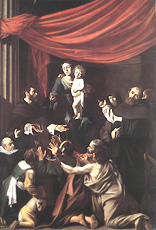

|  |
|---|
[91886] Poscia che tutte Poscia che tutte cose termin hanno
zerchiamo un ben che mai non verrà meno:
che questo nostro fragile terreno
è brieve infermo faticoso e vano.
Lissù non pianto non duol non affanno
ma di alegrezza sempiterna pieno
ivi non è nascosto alcun veneno
che cun falsa dolcezza porti danno.
Lisù non tema non odio o hamore
non sperar falso, ma scienza vera
e buon voler e carità infinita.
O felice cholui che alza il suo chore
per tempo al ciel e n' aspetta la sera
di questa morte che si chiama vita.